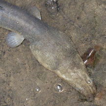
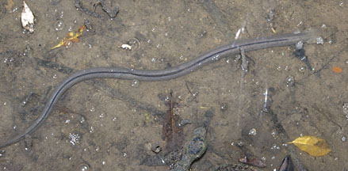
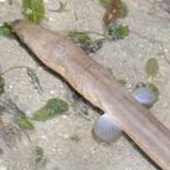

|
|
| fishes text index | photo index |
| Phylum Chordata > Subphylum Vertebrate > fishes > Family Ophichthidae |
| Mangrove
snake-eel awaiting identification Family Ophichthidae updated Sep 2020 Where seen? This large snake-like fish is sometimes seen foraging in shallow water of the incoming tide in the mangroves at Pasir Ris at night. One was seen on Chek Jawa seagrass meadows during daylight emerging from a burrow. Others seen on seagrass meadows on the Northern shores. Features: About 30cm long. A long tubular body pale with a dark stripe along the length at the top. A pair of small rounded pectoral fins. Head large, with small eyes near the tip of the head. It has a pointed tail. Body pattern uniform, those seen were bluish or pinkish grey, beige and yellow. The dorsal fin dark, forming a dark strip along the body length. Sometimes mistaken for worms or sea snakes. Here's more on how to tell apart sea snakes, eels and eel-like animals. |
 Large head, small eyes, pectoral fins. Pasir Ris Park, Dec 12 |
 Pasir Ris Park, Dec 12 |
|
| Mangrove snake-eels on Singapore shores |
On wildsingapore
flickr
|
| Other sightings on Singapore shores |
 |
||